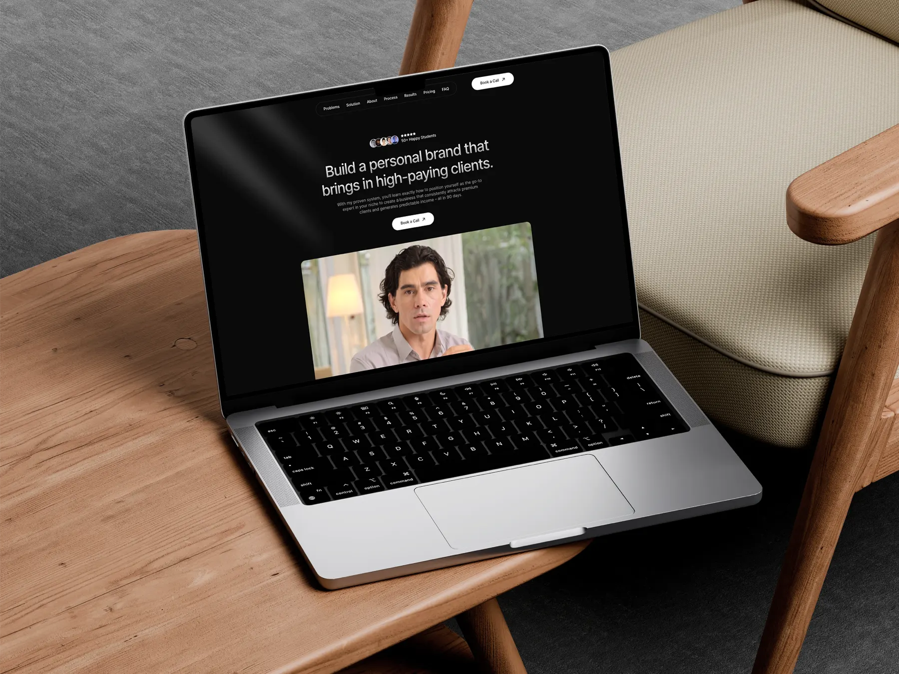
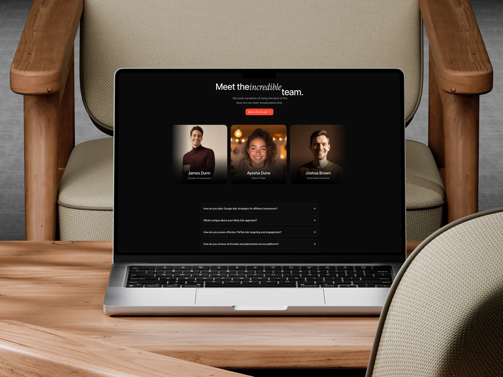
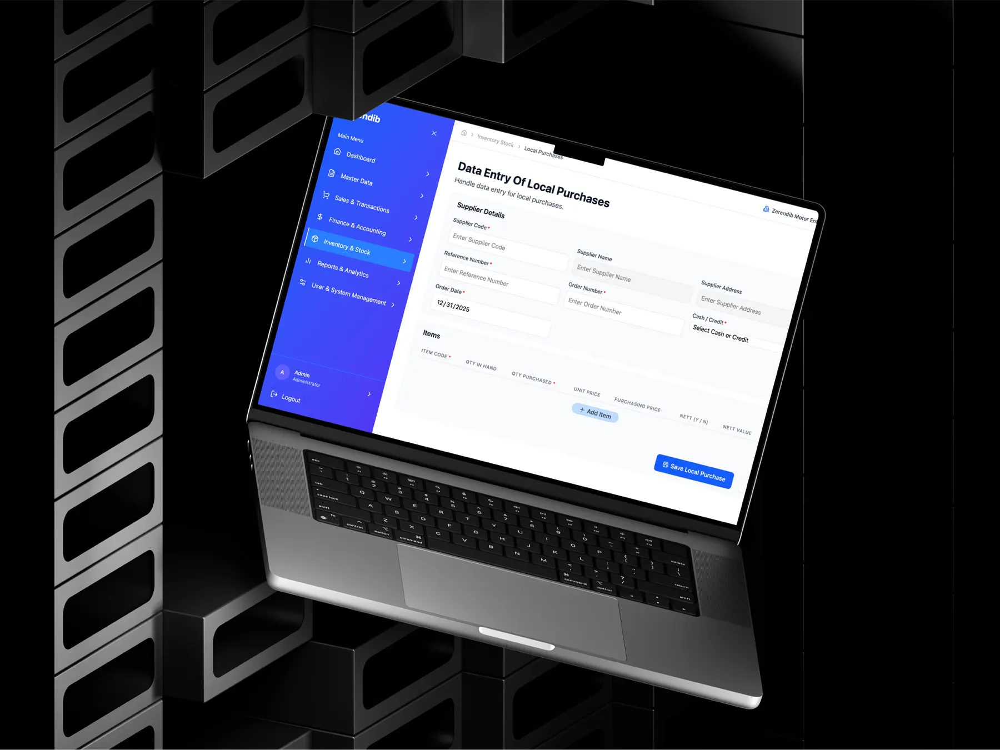
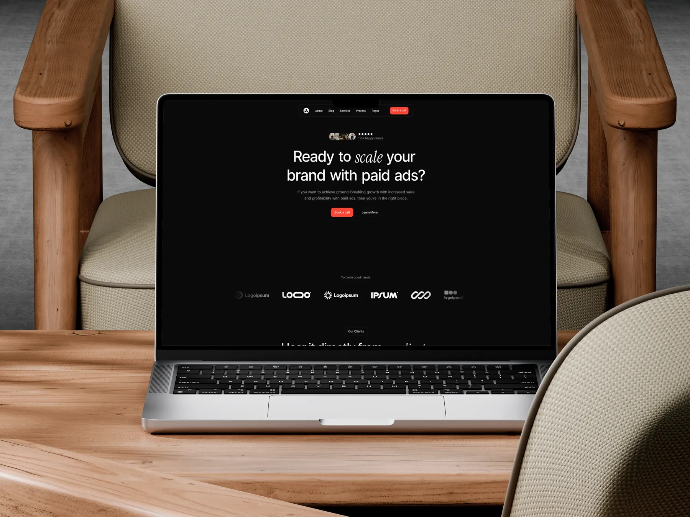
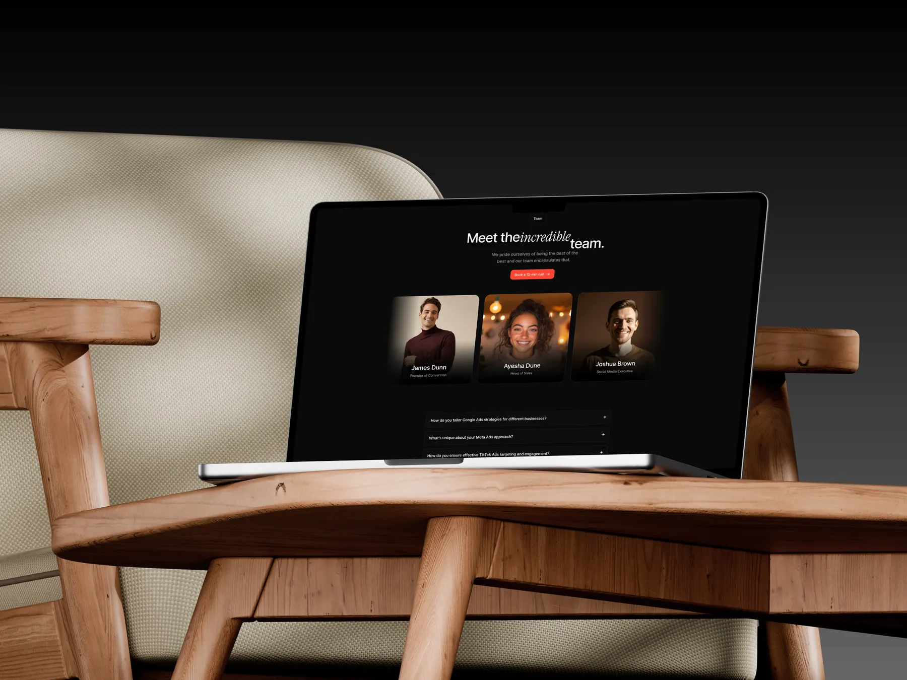
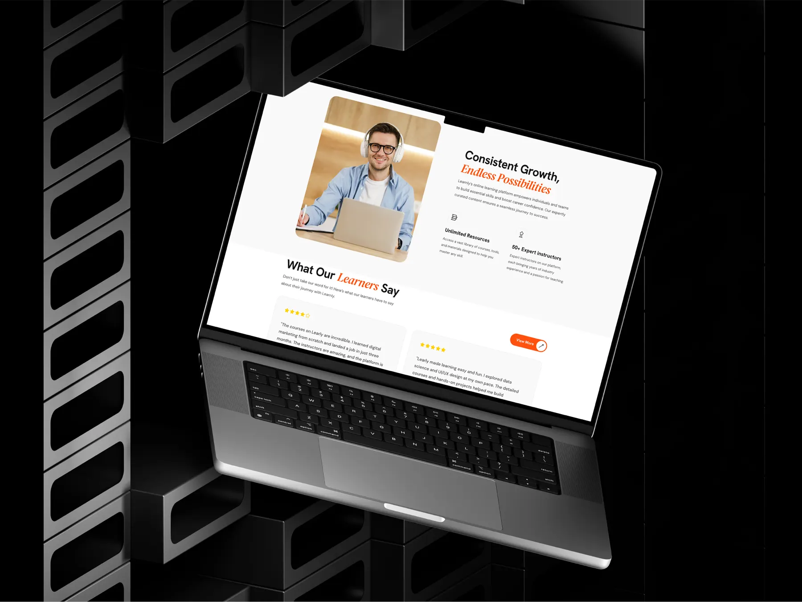
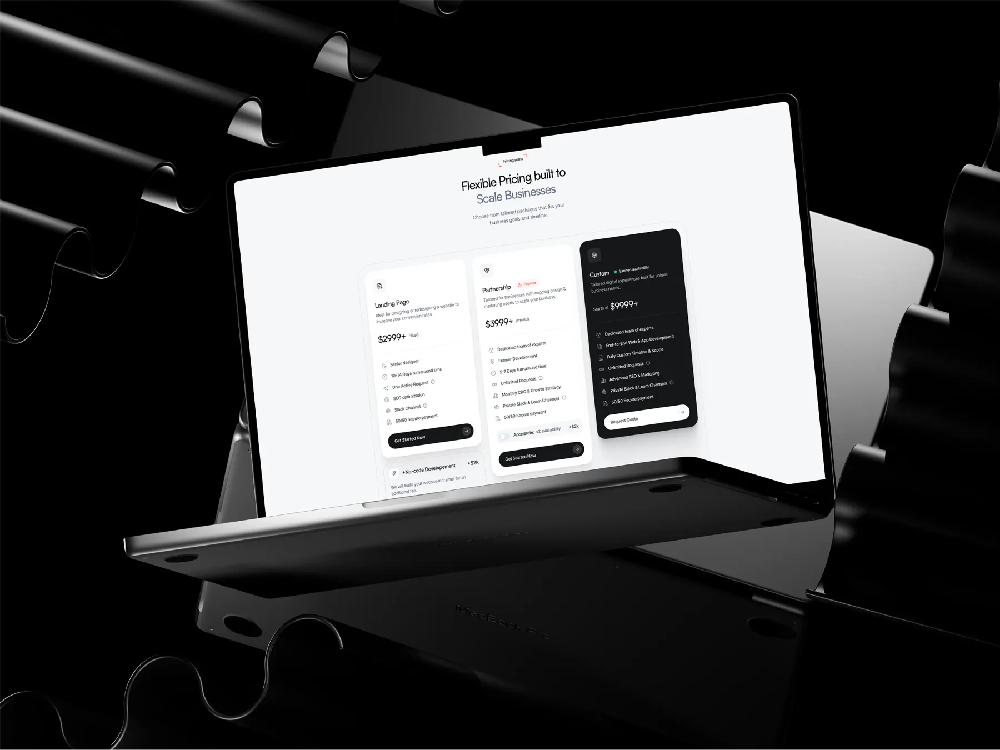
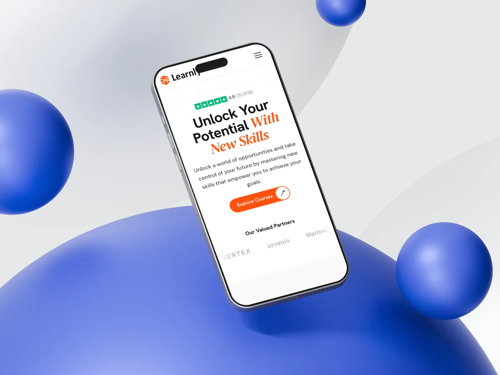

Redesigned a logistics platform to enhance user experience, streamline workflows and improve task completion rates across driver and operations teams. Conducted user research, journey mapping, information architecture and usability analysis to identify pain points and optimise interactions. Created WCAG-compliant, accessible and responsive web and mobile interfaces using Figma, while collaborating with developers on React-based implementation. Applied design thinking, prototyping, user testing and stakeholder feedback to deliver intuitive, scalable, user-centred digital solutions.
(About)UX Engineer · Project Manager · Prompt EngineerMelbourne, Australia
Hi! I’m
Thilan (Sanjula)
A Software Engineering graduate and UX Engineer with 4+ years in UI/UX design, front-end development, business analysis and project management.
Skilled in user-centred design, requirements gathering, stakeholder coordination, and AI tools with prompt engineering — I bridge design and business objectives to deliver intuitive, practical solutions.
(02)Roles I playHybrid by design
One person, five ways to help a team.
01
UX / UI Designer & UX Engineer
Design intuitive, user-centred interfaces, improve workflows, run usability testing, and deliver high-quality front-end experiences using React, Bootstrap and no-code tools like Framer or Wix Studio.
02
Business Analyst / Digital BA
Translate business problems into clear requirements, map As-Is / To-Be processes, and make sure solutions meet both user needs and business goals.
03
Project Manager / Digital Project Coordinator
Plan projects, assign tasks, manage resources, monitor timelines, mitigate risks and deliver SaaS, POS and web platform projects on time.
04
UX + BA + PM Hybrid / Product Manager
Lead cross-functional teams to deliver products that are user-focused, aligned with business objectives and delivered efficiently — using AI tools for faster prototyping, requirements analysis and testing.
05
Product Developer
Build and launch MVPs or web products quickly, while keeping UX quality and functional alignment with client requirements.
(03)Beyond UI / UXMy skills
01
Business analysis & requirements
02
Project management & delivery
03
Product development & prompt engineering
04
Team management
Visual studies
A selection of interface visuals from my design work.








(05)Experience & education2024 — Present
Designed and developed responsive, high-performance websites including EcoWax using WordPress and Nice & Tidy using Tailwind CSS. Applied user-centred design, UX research, wireframing, prototyping and usability testing to create intuitive digital experiences. Implemented mobile-first, accessible and SEO-friendly interfaces that enhanced user engagement and customer satisfaction. Collaborated with stakeholders to translate business requirements into scalable solutions while ensuring cross-browser compatibility, responsive design standards, performance optimisation and modern front-end best practices.
Designed end-to-end domain registry user flows and onboarding experience in Figma — improving onboarding completion and reducing user friction through journey mapping, wireframing, prototyping and UX writing. Supported front-end development handover with detailed design specs, collaborated in Agile ceremonies, and contributed to cross-functional sprint planning and developer alignment.
Led UI/UX design for four Australian-client platforms — DelaExchange, NewsQueck, UPS Delivery and MoneyGram — improving user engagement through Agile sprint workflows, Figma wireframes and research-driven interaction design. Collaborated in cross-functional tech meetups, delivering developer-ready handovers and scalable design systems across complex buyer-seller and logistics interfaces.
Led UI/UX design and front-end development for Zendirp Motors, AutoModeal inventory systems, NovaPro project management platform and web projects — improving task completion through Figma design systems, HTML/CSS, Agile sprints, AI-assisted design using Cursor and Claude AI, and cross-functional QA and developer team leadership.
Led UI/UX design for IOM HR System and NovaPro mobile app — improving workflow efficiency through user research, journey mapping and Figma prototypes. Collaborated with front-end developers, API integration teams, QA and BAs across Agile sprints, delivering scalable design systems and developer-ready handovers.
Designed Active Care home management system UI/UX for internal and external users — improving care worker workflows through user journey mapping, wireframing and Figma prototypes. Conducted client meetings, gathered requirements, and delivered developer-ready handovers across cross-functional UK stakeholder teams.
02 —Education
01
BSc (Hons) Software Engineering
at NSBM Green University Town
Specialisation in UX Business Analysis.
03
Diploma in Information Technology
at Esoft Metro Campus
Diploma program in Information Technology.
(06)Curriculum vitaeFor recruiters & hiring teams
Download my CV
Skip the scroll. Experience, education and skills — all in one document.
Download
CV
CV
Opens in Google Drive
Or book a quick call